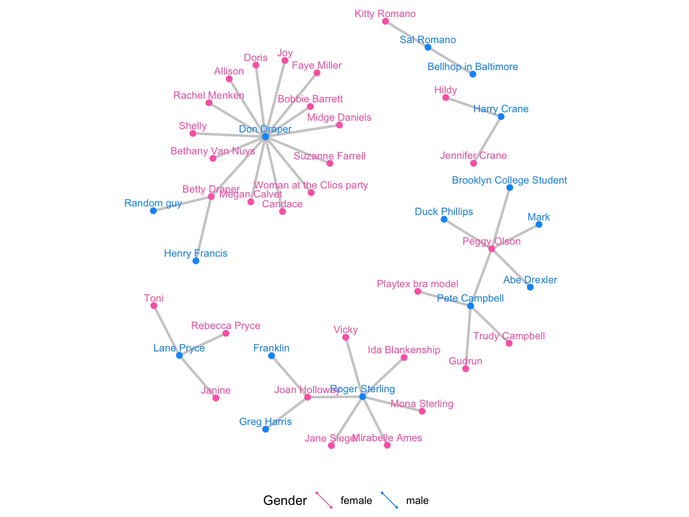
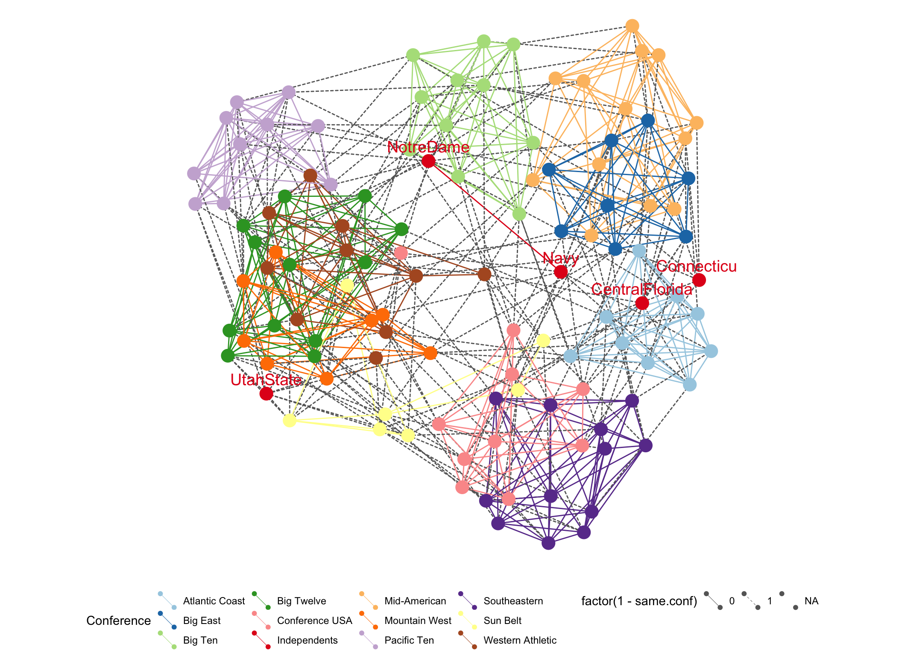
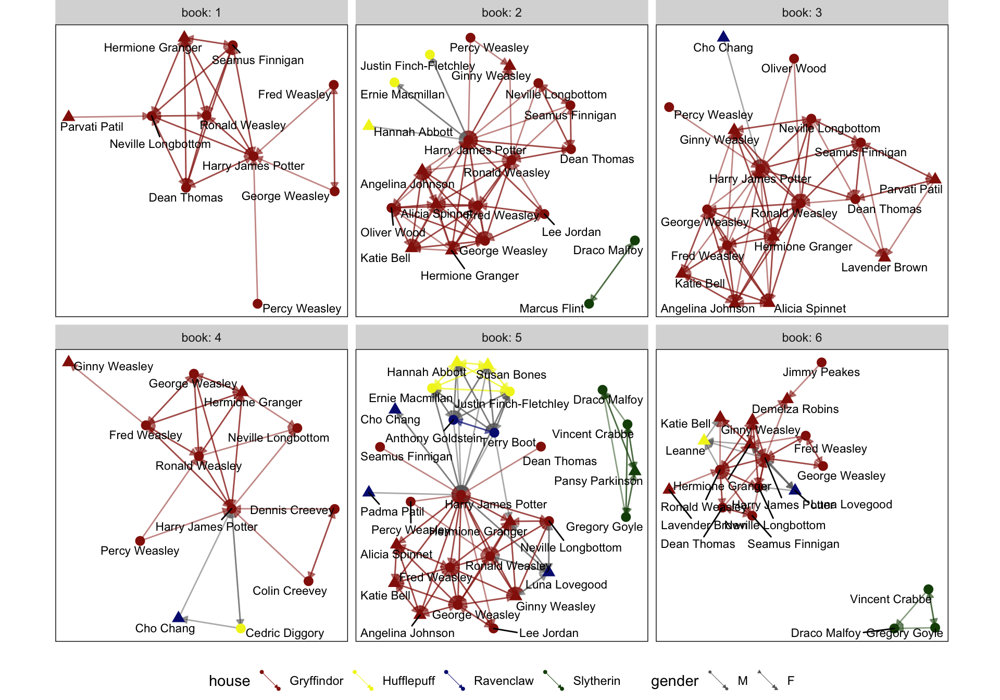

Network analysis
Course web site
This is a link to the course web site, in case you need to go back and forth between tutorial and web materials: http://dmac.dicook.org
Overview
Network data arises in many settings, e.g. study of communities, biological pathways, … Typically the data is provided in two related tables, nodes and edges. Both may have additional attributes.
This is a nodes data set, the characters from the TV series Mad Men.
and the network component measures how the “nodes” are associated. Here it is whether they have had an affair.
Why?
- Telephone exchanges: Nodes are the phone numbers. Edges would indicate a call was made betwen two numbers.
- Book or movie plots: Nodes are the characters. Edges would indicate whether they appear together in a scene, or chapter. If they speak to each other, various ways we might measure the association.
- Social media: nodes would be the people who post on facebook, including comments. Edges would measure who comments on who’s posts.
A basic component is to have an association matrix between many objects. (Image above created by Sam Tyner.)

The R package geomnet provides tools for working with network data.
Example: Madmen

Source: wikicommons
{kind=link}
Here’s an example from the TV series Madmen. The nodes data contains the actors in the series, and the edges contains pairs of actors that had romantic relationships.
glimpse(madmen)
## List of 2
## $ edges :'data.frame': 39 obs. of 2 variables:
## ..$ Name1: Factor w/ 9 levels "Betty Draper",..: 1 1 2 2 2 2 2 2 2 2 ...
## ..$ Name2: Factor w/ 39 levels "Abe Drexler",..: 15 31 2 4 5 6 8 9 11 21 ...
## $ vertices:'data.frame': 45 obs. of 2 variables:
## ..$ label : Factor w/ 45 levels "Abe Drexler",..: 5 9 16 23 26 32 33 38 39 17 ...
## ..$ Gender: Factor w/ 2 levels "female","male": 1 2 2 1 2 1 2 2 2 2 ...Generate a network view
- Create a layout (in 2D) which places nodes which are most related close,
- Plot the nodes as points, connect the appropriate lines
- Overlaying other aspects, e.g. gender
# data step: use a full join to expand the edges data and join it to the nodes
MMnet <- madmen$edges %>%
rename(from_id = Name1, to_id = Name2) %>%
mutate_all(as.character) %>%
full_join(mutate(madmen$vertices, label = as.character(label)),
by = c("from_id" = "label"))
# create plot
set.seed(5556677)
ggplot(data = MMnet, aes(from_id = from_id, to_id = to_id)) +
geom_net(aes(colour = Gender), layout.alg = "kamadakawai",
size = 2, labelon = TRUE, vjust = -0.6, ecolour = "grey60",
directed =FALSE, fontsize = 3, ealpha = 0.5) +
scale_colour_manual(values = c("#FF69B4", "#0099ff")) +
xlim(c(-0.05, 1.05)) +
theme_net() +
theme(legend.position = "bottom")
Which actor was most connected?
madmen$edges %>%
gather(X, Name, Name1, Name2) %>%
count(Name, sort=TRUE)What do we learn?
- Don Draper had a lot of affairs, all with loyal partners except for his wife Betty, who had two affairs herself
- Peggy Olson was the female character with the most affairs, but her husband Pete Campbell had almost as many affairs
Example: American college football
Early American football outfits were like Australian AFL today!
 Source: wikicommons
Source: wikicommons
{kind=link}
Fall 2000 Season of Division I college football. Nodes are the teams, edges are the matches. Teams are broken into “conferences” which are the primary competition, but they can play outside this group.
glimpse(football)
## List of 2
## $ edges :'data.frame': 613 obs. of 3 variables:
## ..$ from : chr [1:613] "BrighamYoung" "Iowa" "BrighamYoung" "NewMexico" ...
## ..$ to : chr [1:613] "FloridaState" "KansasState" "NewMexico" "TexasTech" ...
## ..$ same.conf: num [1:613] 0 0 1 0 1 1 0 1 0 1 ...
## $ vertices:'data.frame': 115 obs. of 2 variables:
## ..$ label: chr [1:115] "BrighamYoung" "FloridaState" "Iowa" "KansasState" ...
## ..$ value: chr [1:115] "Mountain West" "Atlantic Coast" "Big Ten" "Big Twelve" ...# data step: merge vertices and edges
ftnet <- full_join(
football$edges, football$vertices,
by = c("from" = "label")
) %>%
mutate(schools = ifelse(value == "Independents", from, ""))
ggplot(data = ftnet,
aes(from_id = from, to_id = to)) +
geom_net(
aes(
colour = value, group = value,
linetype = factor(1-same.conf),
label = schools
),
linewidth = 0.5,
size = 5, vjust = -0.75, alpha = 0.3,
layout.alg = 'fruchtermanreingold'
) +
theme_net() +
theme(legend.position = "bottom") +
scale_colour_brewer("Conference", palette = "Paired")
What do we learn?
- Remember layout is done to place nodes that are more similar close together in the display. The colours indicate conference the team belongs too. For the most part, conferences are clustered, more similar to each other than other conferences.
- There are some clusters of conference groups, eg Mid-American, Big East, and Atlantic Coast
- The Independents are independent
- Some teams play far afield from their conference.
Example: Harry Potter characters

Source: wikicommons
{kind=link}
There is a connection between two students if one provides emotional support to the other at some point in the book. Code to pull the data together is provided by Sam Tyner here.
load("data/hpchars.rda")
load("data/hpedges.rda")
head(hp.chars)head(hp.edges)# for each book, expand the edges data and join it to characters
hp.all <- hp.edges %>%
group_by(book) %>%
group_map(~ full_join(.x, hp.chars, by = c("name1" = "name"))) %>%
ungroup() %>%
rename(from_id = name1, to_id = name2)
ggplot(data=hp.all, aes(from_id = from_id, to_id = to_id)) +
geom_net(fiteach=T, directed = T, size = 3, linewidth = .5,
ealpha = .5, labelon = T, fontsize = 3, repel = T,
labelcolour = "black", arrowsize = .5, singletons = FALSE,
aes(colour = house, group = house, shape = gender)) +
scale_colour_manual(values = c("#941B08","#F1F31C",
"#071A80", "#154C07")) +
facet_wrap(~book, labeller = "label_both", ncol=3) +
theme_net() + theme(panel.background = element_rect(colour = 'black'), legend.position="bottom")
Your turn
- Read in the class data.
s1.nameands2.nameare the first names of class members, and tutors, with the latter being the “go-to” person for the former. - Write the code to produce a class network that looks something like this:

- Try changing the layout method to “circle” or “mds”
- Try setting a random seed, a random number that affects the initial condition for the layout optimisation. You coulde use code like this, substituting in a different:
- For the class members/tutors, shevin, james, nicole, wai, jamesjing, write out the 5x5 association matrix.
🕠 Lab quiz time!
Share and share alike

This work is licensed under a Creative Commons Attribution 4.0 International License.